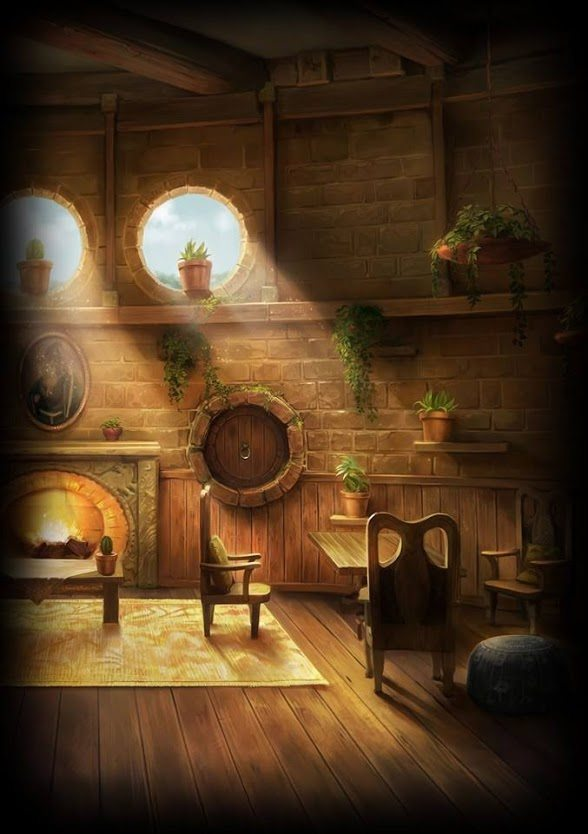
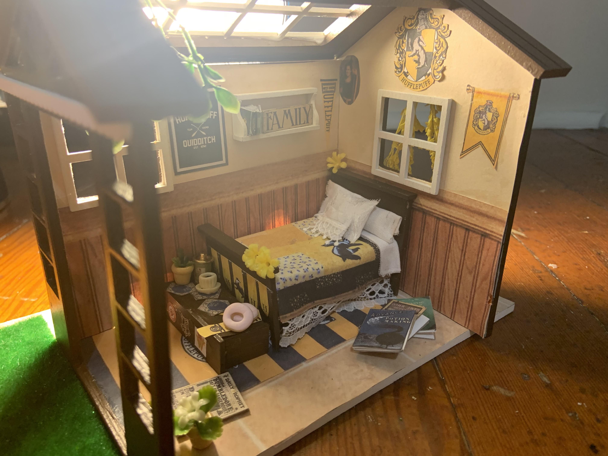

WELCOME TO HUFFLEPUFF'S HOUSE, STRANGER!
1. History
2. Traits
3. Reputation
4. Hufflepuff Dungeon
5. Commom Room
6. Dormitories
7. Head of House
8. Famous students of hufflepuff
9. Etymology
10. House Overview
Hufflepuff is one of the four houses in the Hogwarts School of Witchcraft and Wizardry, as depicted in J.K. Rowling's Harry Potter series. The house was founded by Helga Hufflepuff, one of the four legendary founders of Hogwarts, along with Godric Gryffindor, Rowena Ravenclaw, and Salazar Slytherin.
Helga Hufflepuff was known for her dedication to fairness, loyalty, and hard work. She believed that every student, regardless of their background or talents, deserved a place at Hogwarts and should be given the opportunity to learn and excel. Hufflepuff valued qualities such as patience, kindness, and a strong work ethic.
When Hogwarts was established, Hufflepuff accepted students based on their character rather than their specific abilities or blood status. This philosophy attracted students who possessed a strong sense of fairness and loyalty. Hufflepuff House became a welcoming home for those who didn't fit the criteria of other houses but possessed valuable qualities.
The house symbol of Hufflepuff is a badger, known for its loyalty, persistence, and a gentle nature unless provoked. The house colors are yellow and black, and their common room is located in the basement near the Hogwarts kitchens.
Despite not always being as prominent in the Harry Potter series as Gryffindor, Ravenclaw, or Slytherin, Hufflepuff is portrayed as a house that values unity and teamwork. Hufflepuff students are known for their hardworking and humble nature, often excelling in Herbology and other practical subjects.
Throughout the series, Hufflepuff students have made significant contributions and demonstrated bravery and loyalty. Prominent Hufflepuff characters include Cedric Diggory, who competed in the Triwizard Tournament, and Nymphadora Tonks, a skilled Auror and member of the Order of the Phoenix.
Hufflepuff's reputation for loyalty and fairness has endured over the centuries, making it an integral part of the Hogwarts community and fostering a sense of belonging for those who value hard work and kindness.
Hufflepuff is known for fostering certain traits and values in its students. Here are some of the prominent characteristics associated with Hufflepuff House:
Hardworking: Hufflepuffs are renowned for their strong work ethic and dedication to their tasks. They believe in putting in the effort and perseverance required to achieve their goals.
Loyalty: Hufflepuffs are exceptionally loyal to their friends, family, and causes they believe in. They value strong bonds and will stand by those they care about through thick and thin.
Fairness: Hufflepuffs have a strong sense of justice and fairness. They believe in treating others with equality and respect, and they strive to create an inclusive and harmonious environment.
Patience: Hufflepuffs are known for their patient and understanding nature. They are willing to listen and empathize with others, making them excellent mediators and friends.
Kindness: Hufflepuffs have a natural inclination towards kindness and compassion. They show genuine care and concern for others, often going out of their way to help those in need.
Humility: Hufflepuffs tend to be humble and modest, not seeking attention or glory for their accomplishments. They value teamwork and recognize the contributions of others.
Acceptance: Hufflepuffs embrace diversity and accept individuals for who they are, regardless of their background, abilities, or differences. They appreciate the unique qualities that each person brings.
Dedication to the greater good: Hufflepuffs prioritize the collective well-being and the common good. They are willing to set aside personal ambition and work towards the betterment of society as a whole.
These traits make Hufflepuffs reliable, supportive, and trustworthy individuals who value harmony and cooperation. They often excel in fields that require patience, teamwork, and practical skills, such as Herbology and Care of Magical Creatures.
In the Harry Potter series, Hufflepuff House has gained a reputation for possessing certain qualities and characteristics, both positive and sometimes less prominent compared to other houses. Here are some aspects of Hufflepuff's reputation:
Hardworking and Diligent: Hufflepuffs are recognized for their strong work ethic and dedication. They are known to put in the effort required to achieve their goals and excel in their studies.
Loyal and Reliable: Hufflepuffs are renowned for their unwavering loyalty to their friends, family, and causes they believe in. They can be relied upon to stand by their loved ones and support them in times of need.
Fair and Just: Hufflepuffs are associated with a strong sense of fairness and justice. They believe in treating others with equality and respect, and they strive to create a harmonious and inclusive environment.
Friendly and Accepting: Hufflepuffs are generally portrayed as amiable and accepting individuals. They value interpersonal connections and tend to be welcoming and inclusive towards people from all backgrounds.
Humble and Modest: Hufflepuffs often exhibit humility and modesty, not seeking the spotlight or recognition for their accomplishments. They value teamwork and appreciate the contributions of others.
Overlooked or Underestimated: In the Harry Potter series, Hufflepuff House is sometimes portrayed as being less prominent or overlooked compared to Gryffindor, Ravenclaw, and Slytherin. However, this is depicted as an unfair perception, and the series emphasizes the importance and value of Hufflepuff's traits.
It's worth noting that while Hufflepuff's reputation might not receive as much attention in the books, its qualities and values are highly regarded by those who appreciate hard work, loyalty, fairness, and acceptance. The series also emphasizes that every house has its unique strengths and contributions to offer, and Hufflepuff's reputation extends beyond the confines of Hogwarts.
Hufflepuff House at Hogwarts does not have a dungeon. Instead, their common room is located in the basement near the kitchens. It is a warm and inviting space with low ceilings, round windows, and a cheerful atmosphere. Accessed through a hidden entrance behind a stack of barrels, the Hufflepuff common room reflects the house's welcoming and inclusive nature. It serves as a cozy haven for Hufflepuff students to gather, study, and socialize.
The Hufflepuff common room is a cozy and welcoming space located in the basement near the Hogwarts kitchens. It is accessed through a hidden entrance behind a tapped barrel. With low ceilings and circular windows, the common room features comfortable furnishings and is decorated in Hufflepuff's yellow and black colors. It provides a relaxing environment for Hufflepuff students to gather, study, and foster friendships based on the house's values of inclusivity and warmth.
The Hufflepuff dormitories are located near the kitchens in the basement of Hogwarts castle. They offer a cozy and comfortable living space, reflecting the warm and earthy nature of the house. With gender-segregated sleeping quarters, the dormitories are decorated in yellow and black, featuring nature-themed artwork. Hufflepuff students have personal storage spaces, providing a sense of privacy and a place to call their own. The dormitories foster friendship, loyalty, and inclusivity, allowing students to relax, rest, and form connections with their fellow Hufflepuffs.
Professor Pomona Sprout is the head of Hufflepuff House at Hogwarts. Known for her expertise in Herbology, she embodies the values of Hufflepuff such as hard work, fairness, and loyalty. As head of house, Professor Sprout provides guidance and support to Hufflepuff students, creating a positive and inclusive environment. Her nurturing nature and passion for Herbology inspire students and earn her respect among the Hogwarts community.
Hufflepuff House has produced notable students in the Harry Potter series. Cedric Diggory, known for his fairness and bravery, was a champion in the Triwizard Tournament. Nymphadora Tonks, an Auror and member of the Order of the Phoenix, exemplified loyalty and kindness. Newt Scamander, a passionate protector of magical creatures, reflects Hufflepuff's values. Professor Pomona Sprout, head of Hufflepuff House, embodies the expertise in Herbology and nurturing nature associated with Hufflepuff. These individuals showcase the diverse talents and qualities found within Hufflepuff.
The etymology of "Hufflepuff" in the Harry Potter series is not explicitly explained. However, it is believed to be a combination of "huffle" and "puff." "Huffle" may relate to determination or hard work, while "puff" suggests a gentle and nurturing nature. Together, these elements represent qualities associated with Hufflepuff House, such as perseverance and a caring spirit. The exact origin of the name remains speculative as it has not been officially confirmed by the author.